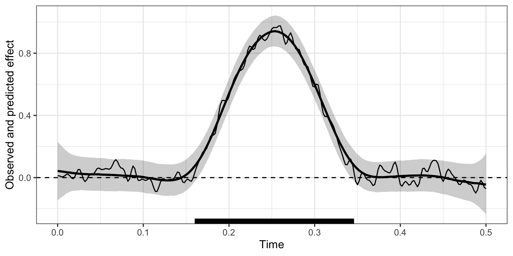

Modelling time-resolved electrophysiological data with Bayesian generalised additive multilevel models
The goal of neurogam is to provide utilities for estimating the onset and offset of time-resolved effects, such as those found in M/EEG, pupillometry, or finger/mouse-tracking data (amongst others). The current version only allows fitting 1D temporal data (e.g., raw M/EEG data or decoding timecourses) but will be extended in the near future to support 2D temporal or spatiotemporal data.
Installation
You can install the development version of neurogam from GitHub with:
install.packages("remotes")
remotes::install_github(
repo = "https://github.com/lnalborczyk/neurogam",
dependencies = TRUE
)Usage
Below we fit a Bayesian generalised additive multilevel model (BGAMM) to estimate the onset and offset of a difference between conditions (in simulated EEG data).
# loading the neurogam package
library(neurogam)
# importing some simulated EEG data
data(eeg_data)
# displaying some rows
head(eeg_data)
#> participant condition trial time eeg
#> 1 participant_01 cond1 1 0.000 0.8618045
#> 2 participant_01 cond1 1 0.002 1.2729148
#> 3 participant_01 cond1 1 0.004 1.6538158
#> 4 participant_01 cond1 1 0.006 1.3910888
#> 5 participant_01 cond1 1 0.008 0.6499553
#> 6 participant_01 cond1 1 0.010 0.1548358
# fitting the BGAMM to identify clusters
results <- testing_through_time(
# simulated EEG data
data = eeg_data,
# name of predictor in data
predictor_id = "condition",
# we recommend fitting the GAMM with summary statistics (mean and SD)
multilevel = "summary",
# threshold on posterior odds
threshold = 10
)
# displaying the identified clusters
print(results)
#>
#> ==== Time-resolved Bayesian GAMM Results ======================
#>
#> Clusters found: 1
#>
#> cluster_id cluster_onset cluster_offset duration
#> 1 0.16 0.346 0.186
#>
#> =================================================================
# plotting the data, model's predictions, and clusters
plot(results)
Citation
Nalborczyk, L., & Bürkner, P. (2025). Precise temporal localisation of M/EEG effects with Bayesian generalised additive multilevel models. Preprint available at: https://doi.org/10.1101/2025.08.29.672336.
Getting help
If you encounter a bug or have a question please file an issue with a minimal reproducible example on GitHub.